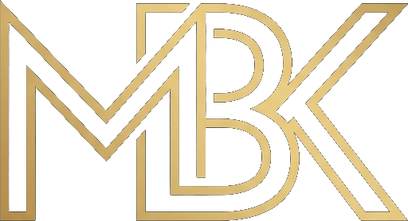
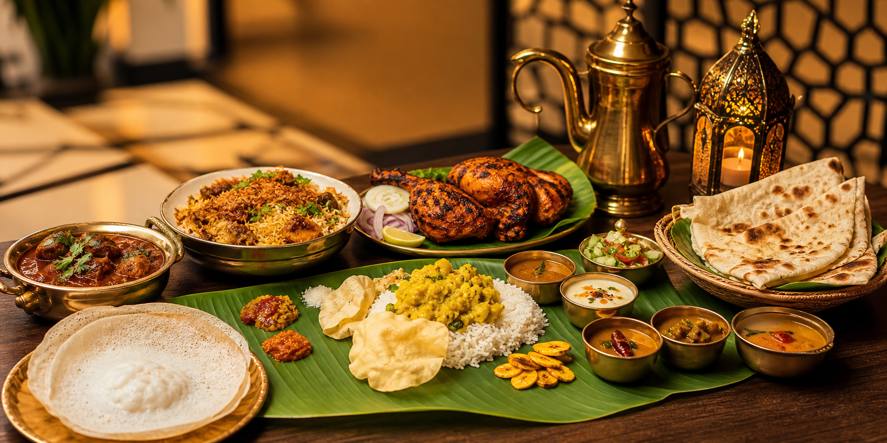

Coastal comfort
Appam, porotta, fragrant curries, seafood-style masala, and homestyle favourites inspired by Kerala kitchens.

Mubarak Restaurant
Since 1952
Authentic Kerala, Indian & Arabic Cuisine
A welcoming table of South Indian comfort, North Indian classics, Kerala favourites, and Arabic grills prepared with bold spices and generous hospitality.
Our Story
In 1952, in the quiet village of Peringammala, our founder, Aboobaker Kunju, opened the doors to a tiny tea shop. There were no grand menus—just the comforting aroma of fresh cardamom tea, simple refreshments, and his genuine, warm smile. It quickly became a sanctuary where weary travelers rested and neighbors gathered to share stories. That simple promise of pure hospitality became the very heartbeat of Mubarak.
As the decades rolled by, our love for serving grew. We expanded into Palode, opening two branches that became woven into the town's daily life and culture. The journey then led us to Chirayinkeezhu Town, where we began crafting fresh baked goods with the same dedication to quality and honesty that defined our very first day.
Today, along the scenic Nedumangadu - Ponmudi road in Vithura, Mubarak Restaurant stands as a living testament to our heritage. We still cook from the heart, bringing together authentic Kerala comforts, Indian classics, and smoky Arabic grills to a table where every guest is treated like family.
Our Specialties
Appam, porotta, fragrant curries, seafood-style masala, and homestyle favourites inspired by Kerala kitchens.
Dosa, idli, chutneys, sambar, rice plates, and spice-rich meals made for everyday dining.
Creamy curries, tandoor-style dishes, biryani, naan, kebabs, and comforting vegetarian options.
Juicy grilled chicken, mandi-style rice, shawarma-inspired bites, flatbreads, dips, and shared platters.
Family dining, rich spices, generous portions
Whether you are stopping by for a quick plate, gathering with family, or sharing a mixed platter with friends, Mubarak Restaurant brings together comforting regional flavors under one roof.
Visit Us
Authentic Kerala, South Indian, North Indian, and Arabic dishes served fresh daily.
HoursOpen daily for lunch and dinner
DiningFamily dining, dine-in and takeaway
ContactAdd your phone number here
Address Opposite Police Station, Vithura, Nedumangadu